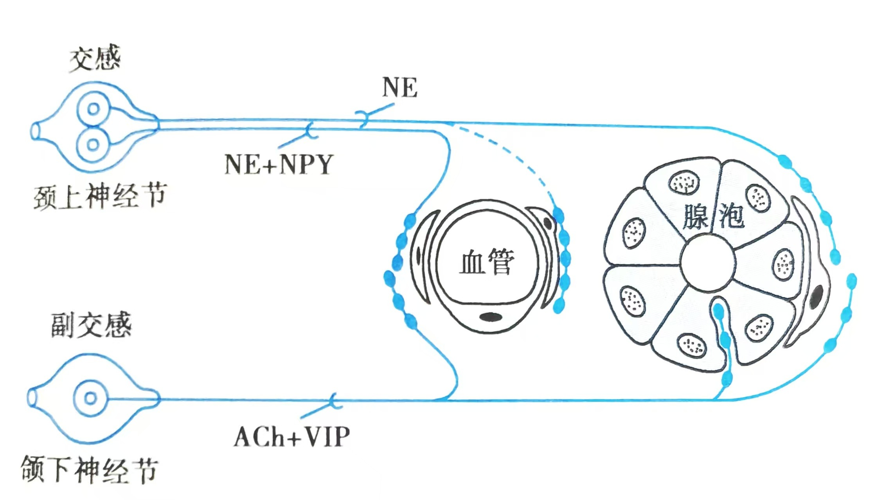

12对脑神经，用口诀"一嗅二视三动眼，四滑五叉六外展，七面八听九舌咽，十迷十一副十二舌下"。
| 序号 | 名称 | 性质 | 主要功能 |
|---|---|---|---|
| I | 嗅神经 | 感觉 | 嗅觉 |
| II | 视神经 | 感觉 | 视觉 |
| III | 动眼神经 | 运动 | 眼球运动、瞳孔缩小 |
| IV | 滑车神经 | 运动 | 眼球运动（上斜肌） |
| V | 三叉神经 | 混合 | 面部感觉、咀嚼肌运动 |
| VI | 外展神经 | 运动 | 眼球运动（外直肌） |
| VII | 面神经 | 混合 | 面部表情肌、味觉（前2/3舌） |
| VIII | 前庭蜗神经 | 感觉 | 听觉与平衡觉 |
| IX | 舌咽神经 | 混合 | 味觉（后1/3舌）、咽部感觉运动 |
| X | 迷走神经 | 混合 | 副交感支配胸腹腔器官 |
| XI | 副神经 | 运动 | 胸锁乳突肌、斜方肌 |
| XII | 舌下神经 | 运动 | 舌肌运动 |
| 特征 | 交感神经 | 副交感神经 |
|---|---|---|
| 节前神经元位置 | 脊髓T1-L3侧角 | 脑干和S2-S4 |
| 节前纤维 | 短 | 长 |
| 节后纤维 | 长 | 短 |
| 神经递质 | 节后为去甲肾上腺素 | 节后为乙酰胆碱 |
| 心脏 | 心率加快 | 心率减慢 |
| 消化道 | 蠕动减弱 | 蠕动增强 |
| 瞳孔 | 扩大 | 缩小 |
| 支气管 | 扩张 | 收缩 |
